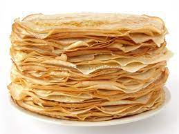

Блины
1
afaf
1.Налить в подходящую емкость молоко комнатной температуры, вбить туда яйца, добавить соль и сахар
2.Постепенно подсыпать муку, при этом помешивая, чтобы не получалось комочков. Они все равно будут получаться, так что помешивать надо качественно. Довести до консистенции нежирной сметаны. Добавить разрыхлитель.
3.Все размешать, оставить на 15–20 минут и потом добавить растительное масло. Кстати, тесто для блинов можно оставить в холодильнике и приготовить блины позже. С ним ничего не случится.
4.На сильно раскаленную сковороду налить немного масла и жарить блины.
